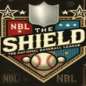

|
|
|  |
Breaking TS News: Draft Pool Revealed Friday, April 12th , 2002 For would-be rookies, a list of whom was announced today by the league, the wait to find out whether or not they have been selected is excruciating. It's tough just getting a scout to notice you, to think you are worth investing an organization's future in. Then draft day arrives and you are snatched up by someone you might not have expected. Some will catch on big; others will be away from home for the first time and will struggle to gain a solid footing in the minors. Still others will battle through, gain that coveted footing and go on to have a solid professional career. League officials have made this information available for all clubs in a new section of the Transactions page. Teams now have a chance to scout the draft pool for 90 days before the draft is held. The early favorites to be high picks are the following: 1. Jason Giambi, 30 year-old 1B out of college. 2. Chipper Jones, 28 year-old LF out of college. 3. Mike Cameron, 28 year-old CF out of college. 4. Barry Bonds, 36 year-old LF out of college. 5. Todd Helton, 27 year-old 1B out of college. 6. Vladimir Guerrero, 26 year-old RF out of college. 7. Alex Rodriguez, 25 year-old SS out of college. 8. Nomar Garciaparra, 27 year-old SS out of college. 9. Ivan Rodriguez, 29 year-old C out of college. 10. Jim Thome, 30 year-old 1B out of college. The official OSA Mock Draft will be released on the day of the draft, or you can review the draft pool on the draft page. |


|